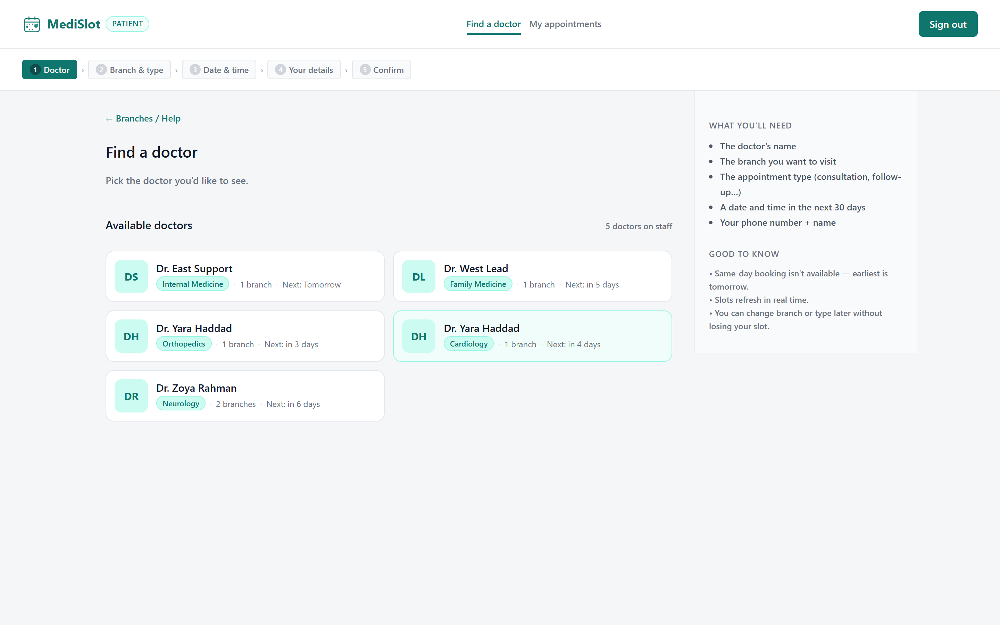
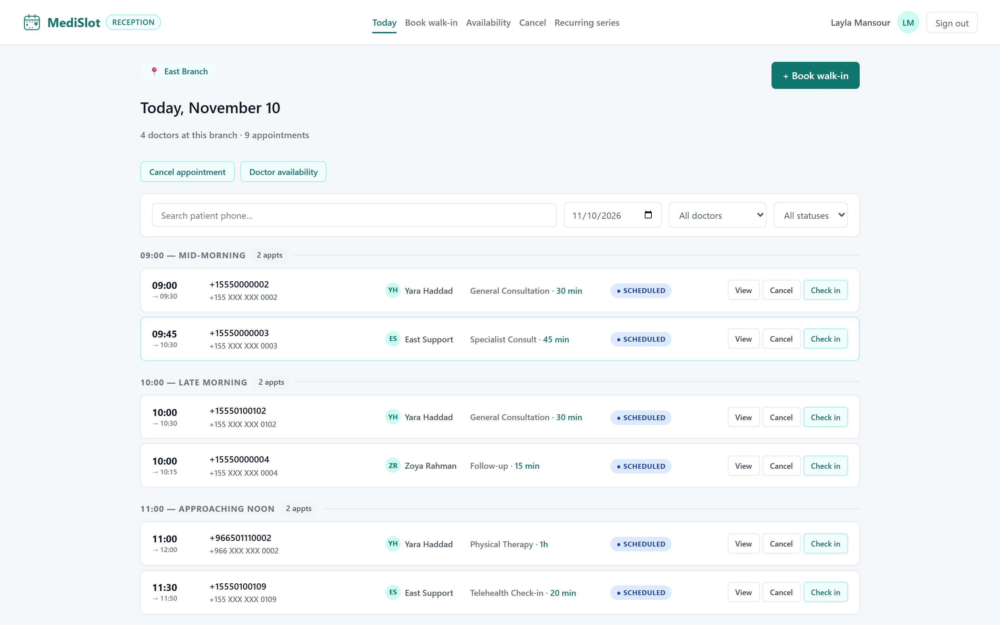
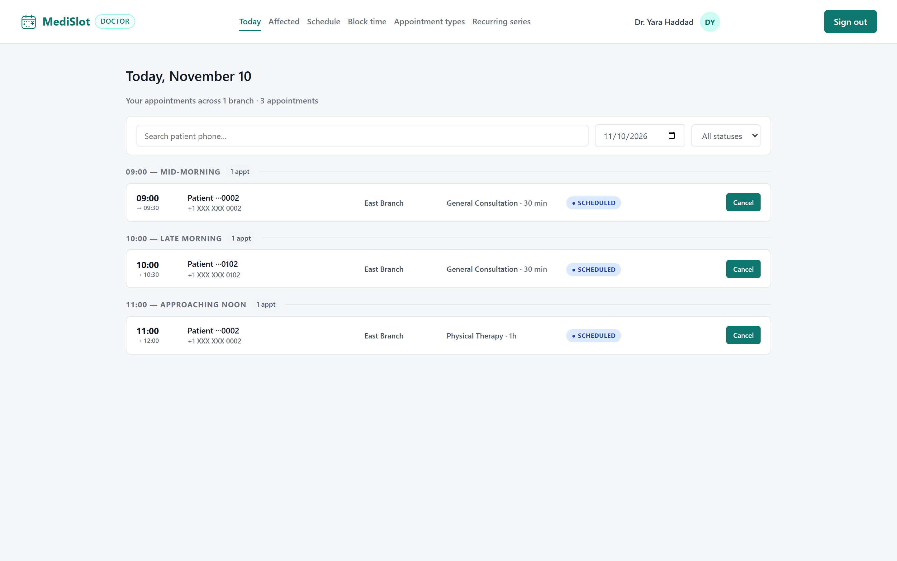
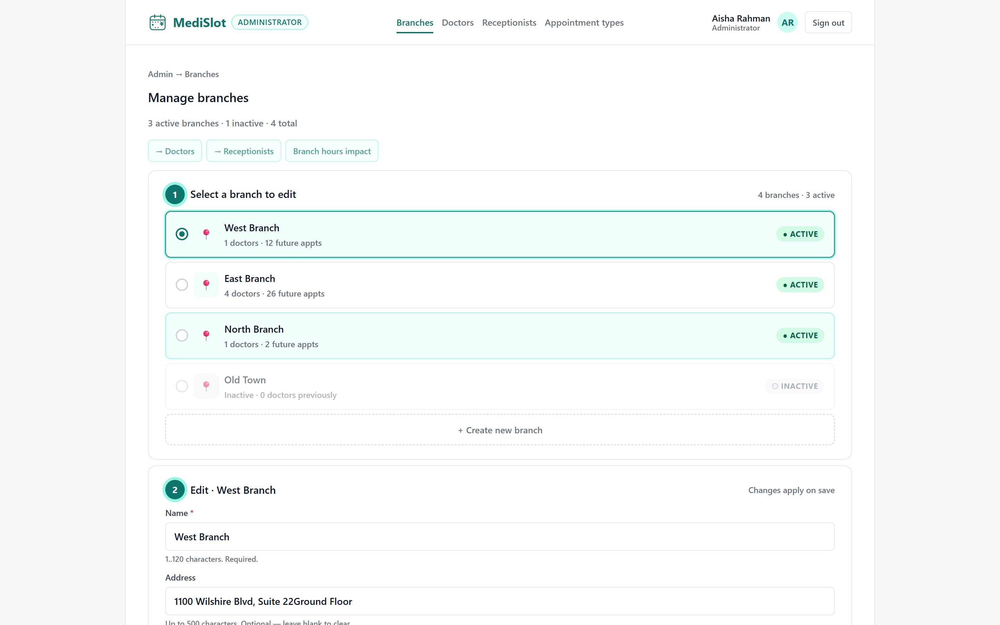

I am a software quality analyst, not a developer. This is the honest account of shipping a working clinic scheduling system with AI tools — the two things that went exactly right, and the two that silently failed.
Every failure in this deck was silent — the tool looked like it was working the whole time. The results are on the next slide.
Pick the doctor you'd like to see.
I started with a one-line project idea and ended with a working system. The order mattered — each tool was introduced only after the previous step had produced something I could check.
ChatGPT asked me the questions and wrote the product brief.
BMAD turned the brief into a PRD, rules, and 43 buildable stories.
BMAD-UI gave generic screens. I asked it to start from scratch.
Colour, then components, then layouts — then 5 variants of every screen.
BMAD and AI-DLC together, story by story. Some features worked like magic; others needed a screenshot.
AI tests passed on broken features. So I wrote my own test skill.
ChatGPT gives its best results when you use it to summarise and define the product goal and scope — not when you use it to produce artefacts. The interview was the value; the brief was just the receipt.
Every failure happened where I gave the AI output to fill in. Every one was fixed by giving it decisions instead — the colour, the rule, the assertion, the screenshot of the bug. The tool was never bad. My instructions were.
I am a software quality analyst, not a developer. My job is to check that a system behaves — not to write one. So the first question wasn't "how do I build this", it was "how do I get a system worth checking".
I treated AI as the author and myself as the reviewer — and made sure the reviewer role got stronger at every stage, not weaker. Every tool I used later was chosen for how well it could be checked, not for how fast it could produce output.
I didn't give it a prompt. I gave it permission to ask me questions. It interviewed me about the clinic, the roles, the failure modes and the promises — and wrote up a detailed product brief from the answers.
The brief opened with a two-word promise — easy and accuracy — and then made each one carry a duty: easy must not cost accuracy, and accuracy must never be silent.
Every assumption I had not made explicit got challenged. The interview surfaced things I had never said out loud — that a patient has no account, that the receptionist must never see a name, that the doctor owns the resolution, not the system.
The before/after states for both audiences, the world being replaced, and the operational rule underneath everything: if the truth changes, the person affected is told.
ChatGPT gives its best results when you use it to summarise and define the product goal and scope — not when you use it to produce artefacts. The interview was the value. The brief was just the receipt.
With the goal and scope settled, I moved to BMAD to write the PRD. Its advantage was structure: the brief answered what the product is, and the PRD had to answer how it is decided.
Promise, audiences, the world being replaced, the rule underneath.
Requirements, business rules, and the acceptance criteria for each one.
8 epics, split into 43 stories that could each be built and checked alone.
One file per story, each with its own definition of done.
Each one stated as a testable claim, not a wish. "A patient can see their appointments" — checkable. "The UI should feel calm" — not.
The scheduling rules, written where the AI had to follow them exactly: no double booking, no silent cancellation, no overlap.
The flows a real person walks, per role — the thing I would later test against.
This was the first real failure of the project, and it was a useful one. The mockups it produced were generic — the kind of screen that could belong to any product, because nothing about them was mine.
The agent was given the PRD and asked for screens. It gave screens — technically plausible, correctly structured, and completely interchangeable with any other SaaS product.
I stopped supplying screens and started supplying decisions. The palette came first — because colour is the one thing every screen has to agree on before anything else can be right.
The agent never failed at drawing. It failed at deciding. Give it the decisions — the colour, the type, the spacing, the shape of the flow — and it becomes very good at proposing. My job moved upstream from "review the screen" to "define the system the screen lives in".
I picked the colours, wrote the meaning of each, defined the components and the layout for each page type — and then asked for variants of every screen, all built from that same system.
One teal as the brand and the primary action, a set of surfaces from white down to a soft page grey, four levels of text, and status colours reserved for status only. Every token got a stated usage — which is what stopped the pages drifting apart.
Cards, pills, stat tiles, form fields, tables, empty states, the conflict modal. Named, so the same component looks the same on the doctor's screen and the receptionist's.
One layout per screen type, defined before any screen was drawn. When the variants came back, they were variations on a system — not four different products.
The UI came out better than I expected — and, more usefully, it came out mine. The one design pattern won 31 of the 40 screens, because it was the one the system was actually built around.




Before any screen was drawn I wrote down the colours, what each one means, and when it is allowed to be used. This is that page — and it is the artefact that survived every later decision.
One brand teal and one primary action colour. Four surface levels, from card white down to the page grey. Four levels of text, so hierarchy is a decision with a name rather than an opinion.
Written to apps/web/src/styles/tokens.css and consumed
directly by the components — which is why the app and this deck
look like the same design.
Default layout is a 760px stacked vertical flow when there's no summary, and a sidebar when there is. Deviate only when the workflow gives a reason — and write the reason down.
Because this is the artefact that changed my job. I stopped reviewing screens and started writing the rules the screens get built from. The AI could never have produced it — it needed a decision, not a prompt.
Once the PRD and the design system existed, the build got faster. I ran BMAD for the spec-driven work and AI-DLC alongside it — the two overlapping more helpfully than I expected. But "it turned out fine" is too simple: some features worked like magic, and some did not.
Story by story. Each story has a written spec, an implementation, and a record of what was deliberately left undone. The spec was the contract I checked the build against — so the AI couldn't quietly redefine the requirement while satisfying it.
Inception, construction, operations: intent becomes plan, plan becomes build, build becomes a verified release. It ran in parallel with BMAD, and whichever was ahead carried the other forward.
Development was not one smooth phase — it was two completely different experiences depending on the feature. I never knew in advance which one I was going to get, so the way I worked changed too.
The spec was clear enough, the design system already existed, and the story was well understood. These went through in one pass — implemented, correct, and matching the mockup without me having to say a word about the UI.
These came back subtly wrong — and the tests were green, so nothing flagged them. The only way I could get them fixed was to make the bug visible: a screenshot of what was actually built, and a reference to the mockup it was supposed to match.
The UI drift was invisible to both the AI and the tests, because nothing was broken — it was just wrong. A screenshot next to the mockup turned a vague "this doesn't look right" into a diff the AI could act on. That became my default: if a screen didn't match, I didn't describe it — I showed it.
At this point the code was largely written and largely good. But I am an SQA, not a developer. I could verify that a feature did what it claimed. I could not evaluate whether the architecture underneath was sound, and I was not going to pretend otherwise.
Instead of reviewing the code, I started reviewing the evidence. Every feature was tested on its outcome alone: does the appointment really hold, is the slot really free, does the patient really see it? If the answer was no, the feature was not done — no matter how finished it looked.
This was the failure that mattered most, because it was silent. The AI wrote tests the way I asked — and what it produced was tests that passed. Consistently. Even for features that were plainly broken.
Well-written, idiomatic, professional-looking test files. The problem was not the syntax — it was what they asserted. They checked the shape of the response, not the behaviour of the feature.
I wrote a skill that encodes how I want tests written — derived from my manual test cases, one for one, each with a real pre-condition and a real assertion on the outcome.
Features that did not work still had green tests. The suite was measuring the tests, not the product.
Broken features now fail. The suite catches them — because the cases were written from the requirement, not from the code that happened to exist.
The cases get better as they go. A failure is a real finding, so it feeds the next case — and the test suite tightens with the product instead of drifting away from it.
Nothing here required me to become a developer. It required me to become a better judge of what a correct answer looks like — and to refuse output I couldn't check.
AI-native development is not about prompting better. It is about moving your judgement upstream — into the brief, the rules, and the assertions — so that everything downstream inherits your standards instead of its defaults.